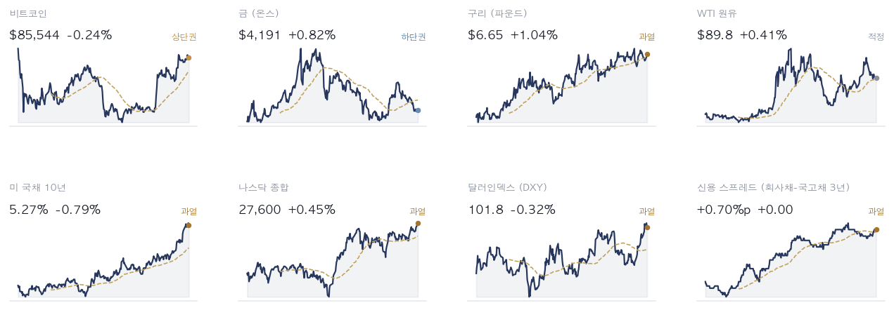
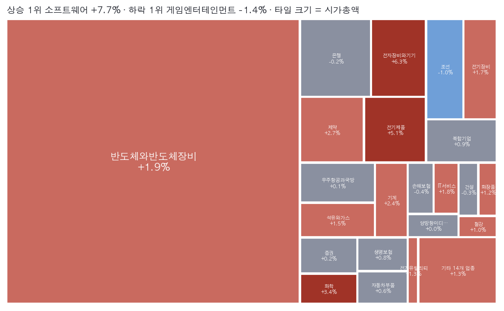
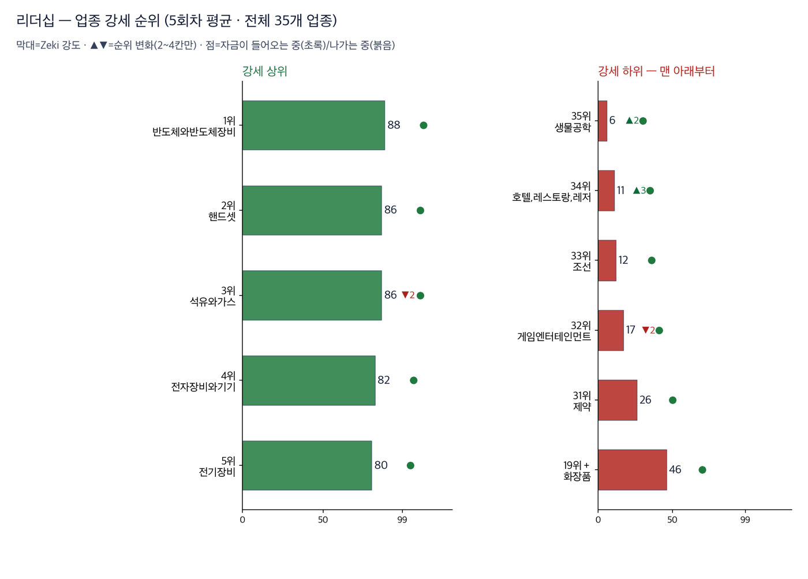
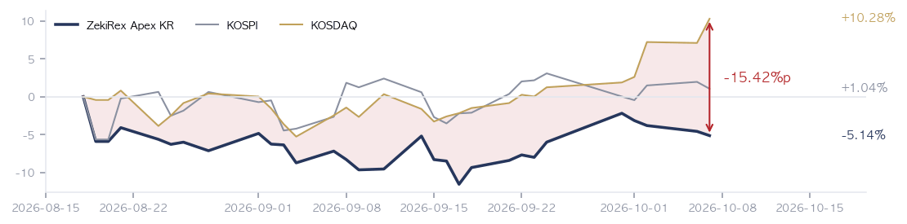
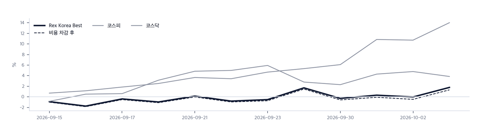

|
ZekiRex™ Apex KR — 2026년 10월 7일
오늘의 판단 · 1/3
데이터 기준 10/6 (KST) 종가 · 간밤 뉴욕 10/6 종가(현지시간) |
ZekiRex™ |
|
|
서울 외국인 1.8조 순매도… 뉴욕은 사상 최고 |
| 저희가 정한 규칙이 고른 종목과 그 성적을 매일 그대로 싣습니다. 맞았든 틀렸든 지우지 않습니다. |
|
THE REX CALL
외국인이 서울에서 1조 7,689억원을 순매도한 6일, S&P 500과 나스닥은 뉴욕 10/6 종가로 사상 최고치를 냈습니다.
한국 10/6 종가로 한국콜마 1,565주를 샀습니다. 손절가 47,196원을 밑돈 현대해상 4,619주는 46,800원에 팔았습니다.
오늘 반드시 알아야 할 것
1. 6일(현지시간) S&P 500은 0.58% 올라 7,819, 나스닥은 0.45% 올라 27,600으로 사상 최고치에 마쳤습니다. 이데일리는 국채금리가 숨을 고른 덕이라고 했습니다. (이데일리·로이터) 2. 같은 날 매체들은 금리와 유가를 다르게 읽었습니다. 뉴욕타임스는 둘 다 높다고, 한국경제는 둘 다 내렸다고 적었습니다. 저희 시세로는 10년물이 5.27%로 내렸고 미국 원유는 올랐습니다. (뉴욕타임스·한국경제) 3. 미국의 8월 무역적자는 1,056억 달러로 7월보다 13.7% 늘었습니다. 예상 1,020억 달러를 웃돌았습니다. 수입은 관세에도 사상 최고였습니다. (CNBC·로이터) 4. 시티가 AMD 목표가를 800달러로 올리자 AMD는 3% 안팎 올랐습니다. 마벨은 2028년 매출 전망을 올려 5% 안팎 뛰었습니다. 인공지능 반도체주로 돈이 몰린 하루였습니다. (이데일리·로이터) 5. 이형일 부총리는 6일 미국의 100억 달러 송금 요구에 상업성과 국내 절차가 갖춰져야 한다고 밝혔습니다. 첫 대미투자금 24억 달러는 1일 보냈습니다. (연합뉴스)
| |
 초록불은 매수 우위, 노란불은 관망, 빨간불은 매수 자제입니다. 칸은 7가지 조건 중 몇 가지를 만족하는지이고, 많을수록 오르는 종목이 넓게 퍼져 있습니다. |
국면 추이 — 8월 22일부터 9월 21일까지 기록이 중단돼 최근 흐름이 아닙니다. 마지막 거래일(10/6)에 빨간불에서 노란불로 바뀌었습니다 방향 — 코스피 자체 점검은 7가지 가운데 6가지로 10/2와 같습니다. 코스닥은 2가지에서 3가지로 늘었습니다. 신호등이 올라가려면 같은 읽기가 3거래일 이어져야 합니다. 저희 규칙에서 이 신호등은 매수를 막지 않습니다. 위험은 종목마다 손절가로 관리합니다.
| |
| 오늘의 조치 |
| 매수 | 한국콜마 161890 | | 매도 | 현대해상 001450 — 하드 손절 −8% 도달 |
|
| 오늘 하나만 깊이 보면 |
|
외국인 순매도에 코스피 하락, 뉴욕은 사상 최고… 코스닥은 900선 회복
10/6 코스피는 0.89% 내렸고 외국인이 1조 7,689억원어치를 순매도했습니다. 코스닥은 2.98% 올라 3개월 만에 900선을 되찾았습니다. 머니투데이는 실적 시즌 앞의 관망세를 코스피 하락의 까닭으로 들었습니다. 같은 날 뉴욕은 S&P 500과 나스닥이 사상 최고였습니다. 왜 그런가. 뉴욕은 실적 시즌 기대로 올랐고 서울은 같은 기대를 기다리며 쉬었습니다. 한국경제는 원화 강세가 삼성전자와 SK하이닉스의 이익을 깎을 수 있다고 전했습니다. 서울의 외국인이 뉴욕을 따라 사려면 8일 실적이 먼저 나와야 합니다. 다음에 무엇이. 남는 질문은 7일 연준 의사록과 8일 삼성전자 실적 뒤에도 외국인이 서울에서 계속 파는지입니다.
그래서 우리는: 코스닥이 올랐는데도 저희가 들고 있던 지엔씨에너지·타이거일렉·샘씨엔에스는 모두 내렸습니다. 지수가 오른 날 저희 종목이 오르지 못한 것은 반대 근거입니다. 반도체를 들고 계시다면 삼성전자 발표 뒤에도 외국인 매도가 이어지는지 확인해 보십시오.
Rex Lens™
| |
| 그 밖에 알아야 할 것 |
| 연준 9월 의사록 7일(현지시간) 공개… 금리 인상 단서에 시장 주목 · 마켓워치는 9월 회의 의사록이 7일 나온다고 전했습니다. CNBC는 미 국채금리가 의사록을 앞두고 내렸다고 했습니다. (마켓워치·CNBC) (MarketWatch · CNBC · Hankyung) → 이번 주에는 큰 지표가 없어 의사록이 10년물 금리를 움직일 가장 큰 재료입니다. 인상 논의가 예상보다 강하게 나오면 사상 최고 부근의 지수가 금리 부담을 다시 맞을 수 있습니다. 성장주를 들고 계시다면 발표 뒤 10년물 방향을 확인해 보십시오. | | 삼성전자 3분기 잠정실적 8일… 영업이익 100조원 넘길까 · 삼성전자는 8일 3분기 잠정실적을 냅니다. 매일경제는 분기 영업이익이 100조원을 넘길 것으로 봤습니다. 한국경제는 삼성전자와 SK하이닉스가 기대치를 밑돌 수 있다고 전했습니다. (매일경제·한국경제) (Maeil Business · Hankyung · Dong-A Ilbo) → 원화 강세가 수출 가격 경쟁력을 깎는다는 점이 두 전망이 갈리는 지점입니다. 삼성전자는 저희 한국 명단에 들어 있어, 발표 뒤에도 기준을 넘는지 확인하겠습니다. | | 미 3분기 실적 시즌 다음 주 개막… 저희 명단은 ASML·TSMC가 먼저 · 머니투데이는 이번 주 미국에 큰 지표가 거의 없다고 전했습니다. 3분기 실적 시즌은 다음 주 시작됩니다. 연합뉴스는 6일 지수 최고치를 실적 기대와 연결했습니다. (머니투데이·연합뉴스) (Money Today · Yonhap KR) → 저희 미국 명단 57종목 가운데 23종목이 10월 안에 실적을 냅니다. 첫 줄은 ASML(14일)과 TSMC(15일)입니다. 두 반도체 실적이 최고치를 쓴 지수가 반도체에 기대 오르는 흐름이 이어지는지 가를 첫 시험입니다. | | 고금리에 국민연금, 보험주 사고 증권주 팔아 · 매일경제 MK마켓은 국민연금이 보험주를 사고 증권주를 팔았다고 전했습니다. 고금리가 이어진 영향이라고 짚었습니다. (MK마켓, 본문은 열지 못해 제목 기준) (MK Markets) → 연기금의 매매가 업종별로 갈렸다는 보도입니다. 보험주나 증권주를 들고 계시다면 금리가 더 오를 때 같은 흐름이 계속되는지 살펴보십시오. | | 샌프란시스코 연은 총재 「인공지능 수요가 에너지 충격을 늘릴 수 있다」 · 액시오스는 샌프란시스코 연은 총재가 인공지능 수요가 에너지 충격을 길게 만들 수 있다고 말했다고 전했습니다. (액시오스, 제목 기준) (Axios) → 연준 관계자가 인공지능 수요를 물가 부담과 이은 발언입니다. 7일 의사록에서 같은 걱정이 나오는지 함께 보셔야 합니다. |
|
한국과 미국을 잇는 것: 서울은 외국인 순매도로 내렸고 뉴욕은 사상 최고였습니다. 이 힘이 개장 때 반도체로 이어질 수 있지만, 미국 현지시간 7일 연준 의사록과 8일 삼성전자 실적이 먼저 와 있습니다. |
|
|
시장이 오늘 한 일 · 2/3
데이터 기준 10/6 (KST) 종가 · 간밤 뉴욕 10/6 종가(현지시간) |
ZekiRex™ |
|
|
| 핵심 지표 |
코스피 6,941 -0.89% · 고점 −23.8% 10/2 이후 첫 거래일에 한국 10/2 종가 아래로 내려왔습니다. 외국인 순매도가 이어졌고, 머니투데이는 실적 시즌 앞의 관망세를 까닭으로 들었습니다. 박스권 | 코스닥 920 +2.98% · 고점 −25.0% 3개월 만에 900선을 되찾았습니다. 다만 저희 점검은 7가지 중 3가지만 통과해 신호등은 아직 빨간불입니다. 900선 회복이 추세 회복을 뜻하지는 않습니다. 박스권 | 원/달러 ₩1,340.00 과매도 | 국고채 3년 3.93% 상단권 | S&P 500 7,819 뉴욕에서 6일(현지시간) 0.58% 올라 사상 최고입니다. 10년물은 5.27%로 2002년 이후 최고 부근인데, 연합뉴스는 지수가 금리 부담보다 실적 기대를 먼저 봤다고 전했습니다. 신고가권 | 포트폴리오 -5.14% 현금 0% · 보유 4종목 8월 18일 시작 이후 -5.14%이고 코스피는 +1.04%입니다. 10/2의 -4.58%보다 더 벌어졌습니다. 10/6에 현대해상을 손절하고 한국콜마를 새로 담았습니다. 설정 이후 |
|
Rex Pulse 거시 지표 8종 1년 추이  Rex Pulse™ — 거시 지표 8종, 1년 흐름과 50일 평균값(점선) · 기준 한국 10/6 종가, 뉴욕 10/6 종가(현지시간) |
미 국채 10년물은 5.27%, 30년물은 5.64%이고 달러인덱스는 101.8입니다. 미국 원유와 북해산 원유, 금, 구리가 함께 올랐습니다. 원/달러는 1,340.00원으로 0.19% 내렸습니다. 금리와 달러가 내리고 구리가 오른 날입니다. 수요 기대는 살아 있고 금리 부담은 한 걸음 물러났다는 읽기와 맞습니다. 다만 유가가 올라 물가 걱정은 남았습니다. 보실 것은 2가지입니다. 먼저 10년물이 5.27% 아래에 머무는지입니다. 다음은 유가 상승이 이어지는지입니다. |
업종 히트맵 — 오늘의 상승·하락 지도  색은 당일 등락(짙을수록 큼), 타일은 시가총액입니다. 상단에 당일 상승·하락 1위가 적혀 있고, 큰 칸이 움직인 날이 지수가 움직인 날이라는 뜻입니다 — 아래 리더십 순위(추세의 힘)와 함께 읽으십시오. |
| 리더십 — 업종 강세 순위 |
 이 그림 읽는 법 | 막대 | 그 업종 종목들을 Zeki 강도 순으로 세웠을 때 종목 절반이 그 위, 절반이 그 아래인 값입니다. 최근 5회차를 평균해 하루치 흔들림을 걷어냈습니다. | | ▲▼ 숫자 | 하루 전보다 순위가 몇 칸 움직였는지입니다. 1칸은 너무 작고 5칸 이상은 절반이 되돌아와서(실측) 2~4칸만 적습니다. | | 점 | 20거래일 자금 순위의 방향입니다. 초록이면 들어오는 중, 붉으면 나가는 중입니다. | | 공동 순위 | 값이 같으면 같은 순위입니다. 억지로 가르지 않습니다. | | 강세 상위 | 강도가 가장 높은 업종들입니다. 자리가 열리면 여기서부터 찾습니다. | | 강세 하위 | 전체 업종 가운데 맨 아래입니다. 번호는 왼쪽과 같은 잣대라, 38개 업종이면 38위가 가장 약합니다. 지금 새로 살 자리가 아니고, 들고 계신 종목이 여기 속하면 손절가부터 확인하실 자리입니다. 바닥에서 돌아서는 업종은 막대보다 점이 먼저 초록으로 바뀝니다. | | 번호가 건너뛰면 | ＋ 표시가 붙은 업종입니다. 맨 아래 다섯에 들지는 않았지만 본문이 짚었거나 저희가 들고 있어 함께 실었습니다. 자료가 빠진 것이 아닙니다. |
| 순위 | 업종 | Zeki 강도 | 변화 |
|---|
| 1위 | 반도체와반도체장비 | 88 | ▲1 | | 2위 | 핸드셋 | 86 | ▲5 | | 3위 | 석유와가스 | 86 | ▼2 | | 35위 | 생물공학 | 6 | ▲2 | | 34위 | 호텔,레스토랑,레저 | 11 | ▲3 | | 33위 | 조선 | 12 | 그대로 |
|
| 수급 — 외국인·기관은 어느 쪽이었나 |
|
수급과 거래량을 한 줄로 | 종목 | 외국인 · 기관 20거래일 | 거래량 | 어떻게 읽나 |
|---|
| 한온시스템 018880 | 외 -7.0 · 기 +9.9 | 4.36배 | 주의 — 기관만 사고 다른 쪽은 팔았습니다 | | SFA반도체 036540 | 외 +15.0 · 기 -5.3 | 2.00배 | 주의 — 외국인만 사고 다른 쪽은 팔았습니다 | | 우리금융지주 316140 | 외 +18.3 · 기 +2.6 | 1.08배 | 확인✓ — 함께 샀지만 거래가 얕습니다 | | 대한광통신 010170 | 외 +4.3 · 기 +0.8 | 0.77배 | 확인✓ — 함께 샀지만 거래가 얕습니다 | | 대한항공 003490 | 외 +8.5 · 기 +1.6 | 0.73배 | 확인✓ — 함께 샀지만 거래가 얕습니다 | | 삼성중공업 010140 | 외 -8.5 · 기 -1.2 | 1.03배 | 관망 — 둘 다 팔지만 거래가 말랐습니다 | | 대우건설 047040 | 외 -4.8 · 기 -2.9 | 0.76배 | 관망 — 둘 다 팔지만 거래가 말랐습니다 | | 두산에너빌리티 034020 | 외 -7.0 · 기 -0.7 | 0.72배 | 관망 — 둘 다 팔지만 거래가 말랐습니다 | | LG디스플레이 034220 | 외 -7.6 · 기 -1.0 | 0.57배 | 관망 — 둘 다 팔지만 거래가 말랐습니다 | | 넷마블 251270 | 외 -11.2 · 기 -0.2 | 0.42배 | 관망 — 둘 다 팔지만 거래가 말랐습니다 |
거래량은 최근 5거래일 평균 ÷ 50일 평균입니다. ✓ 는 저희 진입 규칙(MACD 라인 > 0)도 통과했다는 뜻이고, ✗ 는 수급은 좋지만 규칙 밖이라는 뜻입니다. 이 읽는 법이 맞는지는 지금 세고 있습니다. |
결론은 아직 없습니다 — 칸마다 9건이고 60건이 필요합니다. 하루 9건씩 쌓이므로 약 6거래일 뒤에 답이 나옵니다. 그때 답하는 것은 「외국인·기관이 산 종목이 정말 올랐나」입니다. 9월 18일부터 세고 있습니다 — 기관만 사는 곳 9건 · 둘 다 사는 곳 9건 · 둘 다 파는 곳 9건 · 외국인만 사는 곳 9건.
이름을 확인한 종목 전부를 넷으로 갈랐습니다. 오른쪽으로 갈수록 외국인이 샀고, 위로 갈수록 기관이 샀습니다. 지금 누가 사고 있는지를 보여 주는 자리이지 무엇을 사라는 자리가 아닙니다.
업종 — 값의 강세와 돈의 흐름을 나란히
돈이 먼저 온 곳 — 값은 아직
| 업종 | 강세 | 자금 | 20거래일 |
|---|
| 생물공학 | 62 | 16 | +219,645주 |
| 생명과학도구및서비스 | 43 | 14 | +555,026주 |
| 자동차부품 | 33 | 6 | +4,459,729주 |
값만 센 곳 — 돈은 빠지는 중
| 업종 | 강세 | 자금 | 20거래일 |
|---|
| 건설 | 11 | 44 | -6,151,533주 |
| 생명보험 | 4 | 30 | -1,351,032주 |
| 전기장비 | 6 | 32 | -2,027,251주 |
강세 순위 — Zeki 강도(12개월 가중)로 세운 순위입니다. 최근 5회차를 평균해 하루치 흔들림을 걷어냈습니다.
자금 순위 — 20거래일 순매수로 세운 순위입니다. 값이 아니라 돈이 들어온 양을 봅니다.
공동 순위 — 값이 같으면 같은 순위를 줍니다. 억지로 가르지 않습니다.
두 순위가 어긋나면 — 그 자리가 볼 만합니다. 돈이 먼저 오면 값이 아직인 것이고, 값이 먼저 세면 돈이 빠지는 중일 수 있습니다.
| Rex 25™ — 당일 등락률 전체 순위 |
| 01 281820 케이씨텍+15.42% | | 02 192820 코스맥스+10.70% | | 03 083450 GST+4.45% | | 04 317400 자이에스앤디+2.70% | | 05 078930 GS+0.95% | | 06 ● 161890 한국콜마+0.73% | | 07 098120 마이크로컨텍솔+0.33% | | 08 059090 미코+0.00% | | 09 ● 219130 타이거일렉-0.11% | | 10 ● 252990 샘씨엔에스-0.20% | | 11 ● 119850 지엔씨에너지-0.37% | | 12 089860 롯데렌탈-0.97% | | 13 005930 삼성전자-1.09% | | 14 001450 현대해상-1.78% | | 15 003350 한국화장품제조-3.62% |
|
10/6 저희 기준을 넘은 종목은 15종목으로 10/2와 같고 명단도 그대로입니다. 반도체가 7종목입니다. 4종목은 들고 있고 11종목은 자리가 없어 사지 못했습니다. 현대해상은 손절가를 밑돌아 팔았지만 진입 관문은 여전히 통과합니다. 손절은 보유 중의 가격 규칙이고 명단은 지금 살 수 있는지의 규칙이라 서로 다른 질문입니다. 케이씨텍과 코스맥스가 크게 올라 상승 상위에 들었습니다. 그래서 이번 주에는 명단의 반도체 7종목이 8일 실적 발표까지 버티는지가 먼저입니다. |
| 15종목뿐입니다. 25자리 가운데 오늘 조건을 만족한 것이 15개라는 뜻이고, 빈자리는 채우지 않습니다. ● 표시가 우리 보유 종목입니다. 순서는 등락률만 따릅니다 — 하락 상위에 보유 종목이 있어도 그 자체가 매도 신호는 아닙니다. 매도는 −8% 손절과 오실레이터 이탈, 둘뿐입니다. |
| 관문을 통과한 종목 — 자리가 없어 담지 못한 이름들 |
| 반도체·하드웨어 5 | | 098120 마이크로컨텍솔 | RS 96 | ₩60,800 | | 005930 삼성전자 | RS 92 | ₩273,000 | | 083450 GST | RS 91 | ₩56,300 | | 281820 케이씨텍 | RS 89 | ₩106,300 | | 059090 미코 | RS 84 | ₩23,950 | | 산업재·인프라 2 | | 317400 자이에스앤디 | RS 94 | ₩10,260 | | 089860 롯데렌탈 | RS 89 | ₩50,900 | | 소비 2 | | 003350 한국화장품제조 | RS 92 | ₩14,910 | | 192820 코스맥스 | RS 86 | ₩300,000 | | 금융 1 | | 001450 현대해상 | RS 83 | ₩46,800 | | 에너지·정유 1 | | 078930 GS | RS 90 | ₩106,100 |
|
왜 못 담았나. 자리는 넷뿐이고 각 자리에 총자산 25%가 들어갑니다 — 한 종목이 −8%에 걸려도 계좌 전체로는 2% 손실이 되도록 맞춘 구조입니다. 자리를 비우는 길은 손절과 오실레이터 이탈 둘뿐이라, 더 좋은 후보가 나와도 갈아타지 않습니다.
이 목록이 뜻하는 것. 15개가 조건을 통과했고 그중 보유 중인 종목을 뺀 11개가 대기 중입니다. RS는 83~96입니다. 우리 4자리는 반도체·하드웨어 3, 소비 1로 나뉘어 있고 가장 큰 쪽이 반도체·하드웨어입니다. 그래서 하루 등락이 지수와 평균 2.1%p 벌어졌습니다. 가장 크게 갈린 9/7 세션에는 코스피보다 5.6%p 더 내렸습니다. 자리가 하나 열리면 이 순서의 맨 위부터 검토합니다. 매수 추천이 아닙니다. |
| 매수 금액 산출 근거 |
| 자리는 넷이고 각 자리에 계좌의 25%를 넣습니다. 한 종목이 손절가(−8%)를 밑돌아도 계좌 전체로는 2% 안팎의 손실이 되도록 맞춘 구조입니다. 아래는 이번 주문이 그 규칙대로였는지 검산할 수 있게 적은 것입니다. |
한국콜마 161890 | 계좌 전체 평가액 | ₩948,582,030 | | 한 자리에 넣기로 한 금액 (25%) | ₩237,145,508 | | 실제 매수한 금액 | ₩216,171,790 | | 이보다 작으면 사지 않는 하한 (8%) | ₩75,886,562 | | 손절에 걸리면 계좌가 입는 손실 | 1.8% |
= 1,565주 주문 실행 |
| 한 줄 정리: 서울 숫자는 10월 6일 종가입니다. 뉴욕 숫자는 10월 6일(현지시간) 종가입니다. |
|
|
|
우리가 한 일 · 3/3
데이터 기준 10/6 (KST) 종가 · 간밤 뉴욕 10/6 종가(현지시간) |
ZekiRex™ |
|
|
| 종목 | 비중 | 평가금액 | 평가손익 | 현재가 | 손절가 | 여유 | 보유 기간 | 다음 이벤트 | | 샘씨엔에스 | 22% | ₩211,284,640 | −₩956,520 | ₩19,880 | ₩18,372 | +8.2% | 5일 | 확인 안 됨 | | 한국콜마 | 23% | ₩216,126,500 | +₩0 | ₩138,100 | ₩127,052 | +8.7% | -1일 | 확인 안 됨 | | 지엔씨에너지 | 26% | ₩249,135,600 | +₩12,175,800 | ₩53,200 | ₩46,552 | +14.3% | 25일 | 확인 안 됨 | | 타이거일렉 | 29% | ₩271,990,000 | +₩55,165,000 | ₩92,200 | ₩73,500 | +25.4% | 19일 | 확인 안 됨 | | 현금 | 0% | ₩45,290 | 아직 투자하지 않은 돈입니다 |
계좌 요약 | 시작 자본 | ₩1,000,000,000 | 2026-08-18 설정 | | 실현 손익 | −₩117,802,250 | 판 종목에서 확정된 금액 | | 평가 손익 | +₩66,384,280 | 들고 있는 종목의 장부상 손익 | | 현재 평가액 | ₩948,582,030 | 시작 대비 −5.14% | | 최고 평가액 | ₩1,000,000,000 | 지금은 고점 대비 −5.14% |
시작 자본에 실현 손익과 평가 손익을 더하면 현재 평가액이 됩니다. |
포트폴리오 누적 수익률 대 벤치마크  기록 시작(8/18) 이후 — 하루보다 이쪽이 중요 | 계좌 | −5.14% | | 기준 | | 코스피 | +1.04% | | −6.18%p | | 코스닥 | +10.28% | | −15.42%p |
8/18부터 10/6까지, 30거래일입니다. 지금 지수와의 차이 — 코스피 대비 −6.18%p · 코스닥 대비 −15.42%p 8월 18일 시작 이후 저희 장부는 -5.14%이고, 코스피는 +1.04%, 코스닥은 +10.28%입니다. 두 지수보다 뒤에 있고, 좋지 않은 숫자지만 그대로 알려 드립니다. 10/2의 -4.58%에서 0.56%p 더 내렸습니다. 현대해상이 손절가 아래에서 팔렸고, 코스닥이 오른 날에도 지엔씨에너지·타이거일렉·샘씨엔에스는 내렸기 때문입니다. 종료된 매매 8건 가운데 이익으로 끝난 것은 1건입니다. 그래서 이번 주에는 손절가에 가장 가까운 샘씨엔에스가 다음 변화를 정합니다. |
| Rex Korea Best — 이 뉴스레터에 실린 이름들의 성적표 |
무엇인가. 이 뉴스레터에 이름이 오른 회사들을 모아 만든 지수입니다. 관문을 통과한 종목과 포트폴리오 보유 종목을 합쳐 최대 스물아홉 곳까지, 모두 같은 비중으로 담습니다. 명단은 판이 나가는 날 그대로 적어 두고 뒤에 고치지 않습니다 — 지나고 나서 좋았던 것만 골라 넣으면 어떤 성적표도 좋아 보이기 때문입니다. 무엇을 위한 것인가. 저희가 지면에 적은 이름이 실제로 값을 하는지 숫자로 남기기 위해서입니다. 그래서 같은 기간 코스피 · 코스닥과 나란히 놓고, 사고파는 비용을 뺀 뒤의 숫자도 함께 싣습니다. 숫자 읽는 법. Zeki 강도는 같은 기간 다른 주식과 견준 주가의 힘을 100점 만점으로 매긴 것입니다. 100점에 가까울수록 많이 오른 쪽입니다. 아닌 것. 살 수 있는 상품이 아니고, 추천도 아니며, 저희 계좌의 성적도 아닙니다. |
 이 그림 읽는 법 | 무엇인가 | 그날 편지에 실린 이름 전부(Rex 25 + 보유 종목)를 똑같은 무게로 담았다면 어떻게 됐을지입니다. 살 수 있는 상품이 아니라 저희 명단의 성적표입니다. | | 두 선 | 실선은 비용 전, 점선은 매매비용을 뺀 뒤입니다. 명단이 바뀌면 갈아타는 비용이 들기 때문에 둘을 함께 싣습니다. | | Best 의 뜻 | 시장에서 최고라는 뜻이 아니라 저희 기준으로 가장 높은 점수를 받은이라는 뜻입니다. | | 길이 | 짧은 구간은 운과 실력을 가르지 못합니다. 120거래일이 쌓이기 전까지는 이 숫자로 판단하지 마십시오. |
|
Rex Korea Best — 지수 출범 이후 (9/14→10/6) | Rex Korea Best | +1.32% | | 기준 | | 코스피 | +3.85% | | −2.53%p | | 코스닥 | +14.02% | | −12.71%p |
12거래일 · 비용을 뺀 값입니다. 비용 전은 +1.77%입니다. 오른쪽은 우리가 앞선 폭입니다. | 지수 대비 −12.71%p. 12회차째입니다. 저희가 미리 정한 신뢰 문턱은 120회차이고 지금은 120회 가운데 12회째입니다. 이 숫자로는 아직 잘한다고도 못한다고도 말할 수 없습니다. |
12거래일치입니다. 짧은 구간은 운과 실력을 가르지 못하므로 120거래일이 쌓이기 전까지는 이 숫자로 판단하지 마십시오. 많이 오른 쪽 | 케이씨텍 281820 | +15.42% — 평소보다 훨씬 많이 거래됐습니다. | | 코스맥스 192820 | +10.70% — 값은 1년 최고가에 1% 안쪽까지 왔습니다. | | GST 083450 | +4.45% |
많이 내린 쪽 | 한국화장품제조 003350 | −3.62% | | 현대해상 001450 | −1.78% — 평소보다 훨씬 적게 거래됐습니다. | | 삼성전자 005930 | −1.09% |
|
| Rex Radar™ — 앞으로의 일정 |
| 이번 주의 핵심 — 이번 주 가장 큰 사건은 8일 삼성전자 3분기 잠정실적입니다. 원화 강세 속에서도 영업이익 100조원 안팎을 지키는지가 외국인 매도가 멈출지 가늠하는 첫 시험입니다. | 10월 7일(수) · 미국 현지시간(발표 시각 미확인) 미 연준 9월 회의 의사록 공개핵심미 10년물은 5.27%로 2002년 이후 최고 부근입니다. 저희 반도체 2종목은 이 금리 부담에 함께 흔들릴 수 있습니다. 볼 숫자: 인상 논의가 예상보다 강하게 나오면 10년물이 5.27% 위로 다시 올라서는지 보십시오. | 10월 7일(수) · 서울 종가 샘씨엔에스 손절가 판정핵심샘씨엔에스는 10/6 19,880원으로 손절가 18,372원에 저희 4종목 가운데 가장 가깝습니다. 볼 숫자: 10/7 샘씨엔에스가 18,372원 위에서 마치는지 보십시오. 아래에서 마치면 그 종가에 팝니다. | 10월 8일(목) · 서울 삼성전자 3분기 잠정실적핵심삼성전자는 저희 명단 15종목 가운데 하나이고 반도체가 7종목입니다. 저희는 반도체 2종목을 들고 있습니다. 볼 숫자: 영업이익이 100조원을 넘는지, 그리고 그날 외국인이 순매수로 돌아서는지 보십시오. |
|
|
| 2026-10-06 종가 기준 심사 대상 636종목 가운데 15종목이 조건을 통과했습니다. 조건 통과는 매수 추천이 아닙니다. |
| 출처: 한국거래소(KRX) 공시 시세, 15:30 종가 · 서울외국환중개 고시환율(네이버 금융) · 야후 파이낸스 · 국고채·회사채 3년 금리: 네이버 금융 |
|
본 리포트는 정보 제공 목적이며 개별 투자 자문이 아닙니다. ZekiRex™ Apex KR는 10억 원 규모의 모의 포트폴리오를 규칙 기반으로 운용합니다. 실제 계좌도, 주문도, 사고판 일도 없습니다. 표시된 성과에는 수수료와 세금, 매매 시 가격 미끄러짐이 반영되지 않았습니다. 종목 자료에는 상장폐지된 회사가 빠져 있습니다. 살아남은 회사만 세는 셈이라 성과가 실제보다 높게 나옵니다. 과거의 성과는 미래를 보장하지 않으며, 투자에는 원금 손실 위험이 따릅니다. |
| This is the Rex Way, ZekiRex™ |